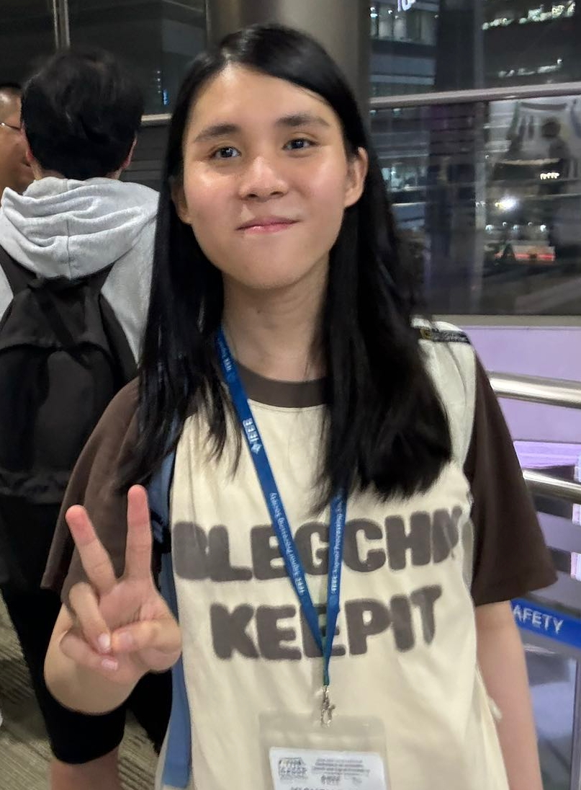

|
 |
Love Finland Love Japan Support Sexual Minorities
Research Scientist, Spellbrush Email: yicheng.gu@aalto.fi | yichenggu@sizigistudios.com
Curriculum Vitae
Google Scholar
GitHub
LinkedIn
|
|
|
|
I am a Research Scientist at Spellbrush, a start-up company
passionate about making lifelike AI-powered Anime Waifus and Husbandos for us Otakus.
I work closely with my producer homies Dr. Junan
Zhang and Prof. Lauri
Juvela for researches that would help other music producers. I am
also a co-founder of Amphion
My research interests include:
|
|
|
| 2026/09 | I engaged in the development of YuE2, a frontier-quality open-source song generation model. |
| 2026/08 | Our team launched NORI_OS, a promotional WebARG for our upcoming AI Anime Waifu Nori, with more than 10k players, over 1M trailer views, and 5k wishlists on our Steam page. |
| 2026/06 | I released PupuM2D, the SOTA music SSL model based on my intuition as a music producer. |
| 2026/05 | Our anti-aliasing paper has been accepted by TASLP. |
| 2025/12 | I built the first aliasing-free neural vocoder and codec systems in the whole research area. |
| 2025/10 | My first paper about audio-visual generation got accepted by IJCV. |
| 2025/06 | I joined Spellbrush as a Research Scientist. |
| 2025/05 | My first paper about Neural Autotune got accepted by Interspeech 2025. |
| 2025/05 | My first paper about Virtual Analog Modeling got accepted by DAFx 2025. |
| 2024/09 | I entered Professor Lauri Juvela's lab as a Visiting Scholar in Aalto University. |
| 2024/09 | My first journal paper about neural vocoder got accepted by TASLP. |
| 2024/09 | Three of my papers have been accepted by SLT 2024. |
| 2024/07 | Method from my first paper is implemented and supported by NVIDIA-BigVGAN 2.0. |
| 2024/07 | My first large-scale speech dataset Emilia got released. |
| 2023/12 | My first paper about neural vocoder got accepted by ICASSP 2024. |
| 2023/12 | My first attempt at developing a large-scale open-source project Amphion succeeded. |
| 2023/10 | My first paper about singing voice processing got accepted by ML4Audio @ NeurIPS 2023. |
| 2022/09 | I entered Professor Zhizheng Wu's lab as a Research Assistant. |
|
|
|
TASLP
Yicheng Gu, Junan Zhang, Chaoren Wang, Jerry Li, Zhizheng Wu, Lauri Juvela IEEE Transactions on Audio, Speech and Language Processing Preprint / Code / Demo / HuggingFace TL;DR: We propose the first aliasing-free neural vocoder and codec systems in the whole research area. |
|
submitted
Yicheng Gu, Junan Zhang, Jerry Li, Zhizheng Wu, Lauri Juvela Preprint / Code / Demo / HuggingFace TL;DR: We propose the SOTA music SSL model based on our intuition as music producers. |
|
TASLP
Yicheng Gu, Xueyao Zhang, Liumeng Xue, Haizhou Li, Zhizheng Wu IEEE Transactions on Audio, Speech and Language Processing Preprint / Code / Demo TL;DR: We propose a Continuous Wavelet Transform-based Discriminator for GAN-based neural Vocoders. |
|
ICASSP 2024
Yicheng Gu, Xueyao Zhang, Liumeng Xue, Zhizheng Wu International Conference on Acoustics, Speech, and Signal Processing 2024 Preprint / Code / Demo / HuggingFace TL;DR: We propose a Constant-Q Transform-based Discriminator for GAN-based neural vocoders. |
|
submitted
Preprint / Code / Demo / HuggingFace TL;DR: We propose a frontier-quality song generator that writes a symbolic score before rendering audio. |
SLT 2024

IEEE Spoken Language Technology Workshop 2024 Preprint / Code / HuggingFace / OpenXLab TL;DR: We develop a unified audio generation open-source toolkit. |
|
SLT 2024
IEEE Spoken Language Technology Workshop 2024 Preprint / Code / Demo / HuggingFace TL;DR: We propose a large scale multi-lingual speech dataset for TTS. |
|
TASLP
IEEE Transactions on Audio, Speech and Language Processing Preprint / Code / Demo / HuggingFace TL;DR: We propose the 2.0 version of Emilia for TTS. |
|
IJCV
Yiming Zhang, Yicheng Gu, Yanhong Zeng, Zhening Xing, Yuancheng Wang, Zhizheng Wu, Bin Liu, Kai Chen International Journal of Computer Vision Preprint / Code / Demo / HuggingFace TL;DR: We propose a Video-to-Audio generation pipeline with Audio-Visual Synchronization and Text-Editability. |
|
Interspeech 2025
Yicheng Gu, Chaoren Wang, Zhizheng Wu, Lauri Juvela Conference of the International Speech Communication Association 2025 Preprint / Code / Demo TL;DR: We propose the SOTA Neural Autotune benchmarking against Melodyne. |
|
DAFx 2025
Yicheng Gu, Runsong Zhang, Lauri Juvela, Zhizheng Wu International Conference on Digital Audio Effects 2025 Preprint / HuggingFace / Demo TL;DR: We propose the first large-scale and diverse dataset for Virtual Analog Modeling. |
|
submitted
Joaquim Cavalcante, Yicheng Gu, Adriel Trajano, Yuri de Malheiros, Thais Gaudencio Preprint / Demo TL;DR: We propose a harmony-aware singing pitch correction model using vocal and accompaniment notes. |
|
ICASSP 2026
Zirui Li, Jens Edlund, Yicheng Gu, Nhan Phan, Lauri Juvela, Mikko Kurimo International Conference on Acoustics, Speech, and Signal Processing 2026 Preprint / Demo / HuggingFace TL;DR: We propose an Extensive, Multilingual, and Diverse TTS dataset for Nordic languages. |
|
submitted
Yicheng Gu, Pablo Pérez Zarazaga, Chaoren Wang, Zhizheng Wu, Zofia Malisz, Gustav Eje Henter, Lauri Juvela Preprint / Code / Demo TL;DR: We propose a high-fidelity neural formant synthesis system based on differentiable resonant filters. |
|
ML4Audio @ NeurIPS 2023
Xueyao Zhang, Yicheng Gu, Haopeng Chen, Zihao Fang, Lexiao Zou, Liumeng Xue, Zhizheng Wu Machine Learning for Audio Workshop (ML4Audio) at NeurIPS 2023 Paper / Code / Demo / Pretrained Model / HuggingFace Space / OpenXLab App TL;DR: We propose to utilize multiple content features for singing voice conversion. |
|
SLT 2024
Xueyao Zhang, Zihao Fang, Yicheng Gu, Haopeng Chen, Lexiao Zou, Junan Zhang, Liumeng Xue, Zhizheng Wu IEEE Spoken Language Technology Workshop 2024 Preprint / Code / Demo TL;DR: We investigated the pros and cons of different semantic tokens for Singing Voice Conversion. |
|
arXiv
Yicheng Gu, Chaoren Wang, Junan Zhang, Xueyao Zhang, Zihao Fang, Haorui He, Zhizheng Wu Preprint / Demo TL;DR: We propose an Extensive, Multilingual, and Diverse Singing Voice Corpus. |
|
|
| 2026-2028 |
Master student in Sound in New Media, working with my friend
Prof. Lauri Juvela
School of Arts, Design and Architecture, Aalto University, Espoo, Finland |
| 2026-2028 |
Master student in Acoustics and Audio Technology, working with my friend
Prof. Lauri Juvela
Aalto Acoustics Lab, Aalto University, Espoo, Finland |
| 2026-2028 |
Master student in Speech and Language Technology, working with my friend
Prof. Lauri Juvela
Department of Information and Communications Engineering (DICE), Aalto University, Espoo, Finland |
| 2024-2025 |
Exchange student in Computer Science, working with my friend
Prof. Lauri Juvela
School of Science, Aalto University, Espoo, Finland |
|
|
| Spellbrush |
Research Scientist, @Tokyo, Japan (2025/06 ~ now)
#Speech and Singing Voice Synthesis |
| The Chinese University of Hong Kong, Shenzhen |
Research Assistant, @Shenzhen, China (2022/09 ~ 2026/06)
#Speech and Singing Voice Synthesis |
| Aalto University |
Visiting Scholar, @Espoo, Finland (2024/09 ~ 2025/06)
#Digital Audio Effects |
| Shanghai AI Laboratory |
Research Assistant, @Shanghai, China (2023/12 ~ 2025/03)
#Video to Audio Generation |
| Moises |
Research Collaboration, @Utah, US (2025/09 ~ now)
#Neural Autotune |
|
|
| Reviewer |
Conferences:
|